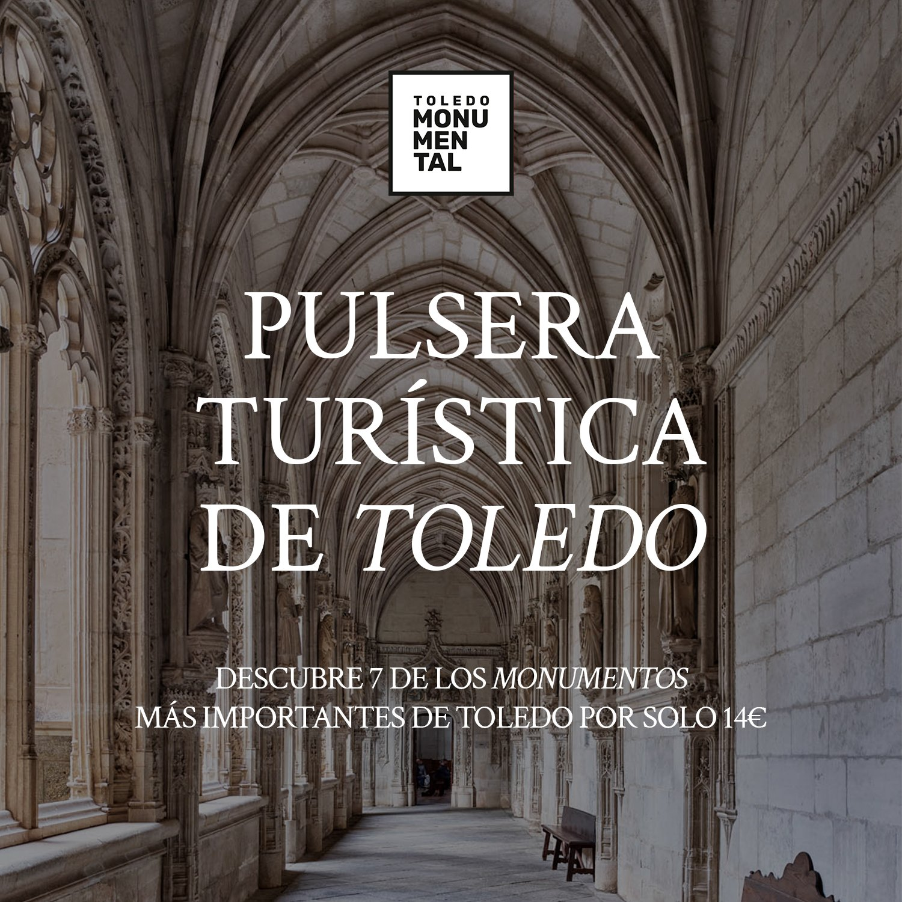

Choose Your Anchor Restaurant
Madrid holds 31 Michelin-starred restaurants in 2026 — one three-star, six two-star, and 24 one-stars. [26] The two-star tier is the sweet spot for a weekend trip: spectacular enough to anchor the itinerary, bookable without a three-month countdown.
Lock the Table — Booking Lead Times
The 90-day horizon is the outer planning edge. For DiverXO, set an alarm: midnight, exactly 90 days before the target Saturday. The €450/person ticket is non-refundable but deducted from the bill. Full refund only with ≥2 weeks' notice.[2]
For the two-star tier: Smoked Room requires faster action than its nominally shorter lead time suggests — it releases on a monthly calendar, so 6 weeks out can be too late if the month already opened. Book direct or watch TheFork daily. Ramón Freixa Atelier's 10-seat counter sells out on reputation alone.[28]
Best booked direct or via TheFork. Day-of-week is the next constraint after the date: many two-star houses close Monday or Tuesday, which cascades into museum and tapas planning.
The Dinner Day — Restaurant × Neighbourhood Pairing
The dinner's neighbourhood shapes the afternoon before it. Use the geographic clustering deliberately to eliminate dead transit time on the evening you have a reservation.
| Your dinner | Barrio | Build your afternoon here |
|---|---|---|
| Paco Roncero | Centro Alcalá 15 | La Latina tapas crawl — Cava Baja, El Rastro (Sundays 9–15h), Casa Lucio's huevos rotos.[35] Walk north from La Latina, arrive at casino by 21:00. |
| DSTAgE | Chueca Salesas | Malasaña vermut hour at Casa Camacho or Bodega de la Ardosa (12–14h), then Chueca's Plaza de Chueca terrace. One barrio apart, short walk. |
| Coque | Chamberí Marqués del Riscal | Calle Ponzano tapas-and-wine street one block away.[13] One drink + one tapa per spot, Wed/Thu are best. Stop by 20:30 to walk to dinner. |
| Smoked Room | Salamanca Castellana 57 | Retiro Park walk → Crystal Palace → Thyssen-Bornemisza for an hour. Or Serrano golden mile window shopping. Both within 15 min walk of the Hyatt. |
| Ramón Freixa Atelier | Salamanca Velázquez 24 | Same Salamanca cluster as Smoked Room. Retiro park, Thyssen, or the Jardín Botánico. Deessa (Jerónimos, near Prado) pairs with a late-afternoon Prado visit for free entry after 18:00.[14] |
| DiverXO | Chamartín Padre Damián 23 | Furthest from the classic tourist circuit. Go early to the Prado, or spend the afternoon in the Chamberí/Salamanca area before Metro to Chamartín (Line 10). Dinner energy demands a restful pre-evening. |
The Free Day — Museums, Tapas, Sunset
Put the day trip on this day (see Step 05) or build the classic Madrid arc: Prado in the morning, Royal Palace at midday, Retiro and Templo de Debod at sunset. The arc works because meal times create natural inflection points.
Prado Museum
Velázquez, Goya, El Greco. Free last 2 hrs daily (18–20h / Sun 17–19h). €15 otherwise.[14]
Lunch
The Spanish lunch slot. La Latina or Plaza Mayor for tapas, or cocido madrileño at La Bola (since 1870) — four hours in individual clay pots.[38]
Royal Palace
€16 general. EU/Ibero-American citizens free Mon–Thu late afternoon.[15] Book timed entry in advance.
Retiro + Debod
Retiro's Crystal Palace and boating lake.[16] Then west to Templo de Debod for sunset.[17] Both free.
Tapas & Vermouth
La Latina's Cava Baja (50+ tabernas, tapas €3–5) or the Malasaña–Chueca vermut circuit. Churros at San Ginés (24h, since 1894) to close.[40]
Museum Closures — Plan Around These
Prado Museum
€15 · Free last 2 hrs dailyMon–Sat 10–20, Sun & holidays 10–19. Free window Mon–Sat 18–20, Sun 17–19. No closure day. Always open
Reina Sofía
€12 · Free 19–21h + Sun morningsMon + Wed–Sat 10–21, Sun 10–14:30. Closed Tuesdays Picasso's Guernica. Free window: Mon + Wed–Sat 19–21, Sun 12:30–14:30.
Thyssen-Bornemisza
€13 · Free Mondays 12–16hTue–Sun 10–19. Monday limited hours: 12–16 only. Free Sat 21–23 (Thyssen Nights). Plan Mondays for the Thyssen + free afternoon slot.
Royal Palace
€16 · EU citizens free Mon–Thu afternoonsOpen daily. EU / Ibero-American citizens: free Mon–Thu from 17h (Apr–Sep) or 16h (Oct–Mar). Book timed entry — queues form fast.
The Day Trip — One UNESCO City, Back by Dinner
Place the day trip on the non-dinner day and use rail. All options below are back in Madrid by mid-afternoon, leaving the stomach unstressed before the evening.

Alcalá de Henares
UNESCO 1998. Cervantes' birthplace (1547). Complutense University founded 1499 — the first planned Renaissance university in Europe.[20] Near-zero planning friction; back by mid-afternoon.
Half day UNESCO CercaníasSegovia
Roman aqueduct 28m tall, ~1km long, built without mortar 1st–2nd century AD.[33] Alcázar, cathedral. Eat cochinillo asado (milk-fed suckling pig). Note: Segovia-Guiomar station is 15 min by bus from old town.[32]
Full day UNESCO AVE from ChamartínAll Cercanías trips covered by the Abono Turístico tourist pass Zone A/T. Segovia and Toledo require separate rail tickets.
A Non-Obvious Bonus: Conference Week
Visiting the first week of June 2026? Two major tech events run simultaneously — one morning session replaces a museum day with a very different kind of city experience.
South Summit
Europe's largest AI and startup forum — 20,000+ attendees.[46] La Nave industrial venue in Villaverde. A half-day is enough to absorb the energy; leave the afternoon for tapas.
Commit Conf
Madrid's flagship developer conference: 70 talks, 40+ Spanish tech communities, 1,000+ attendees.[23] At ETSI Informáticos (Metro Line 1, Sierra de Guadalupe). Lower-key than South Summit; more technical depth.
Logistics Notes
- Metro Line 8 from Barajas: ~25 min to Nuevos Ministerios, €4.50–€5 (€1.50 + €3 airport surcharge).[41]
- Fixed taxi from airport to M-30: €33 flat, 24/7, no extras.
- Abono Turístico Zone A: €10/day, €17/2 days — includes airport metro and Cercanías.[42]
- Since June 2026: contactless bank-card tap-to-pay at all 303 metro stations, €1.50/journey.[43]
Lunch: 14:00–16:00. Dinner: from 21:00. Arriving before these windows means empty restaurants. Vermouth hour (La Hora del Vermut): 12–14h — the bridge between morning activities and lunch.[49]
Optional. Round up or leave €2–5 for a standard meal. 5–10% is generous by Spanish standards — nothing like US norms. At Michelin houses, no tip is expected on top of the tasting menu price.
Chocolatería San Ginés (24h, est. 1894) — churros con chocolate near Sol. The canonical post-club stop, but good any time of night. A 2-minute walk from Puerta del Sol.[40]
Corral de la Morería — world's only Michelin-starred tablao. 8-seat fine-dining room (Compás menu €120) + show €95.90.[36] Or Cardamomo for best value-quality ratio: 4 shows daily, €42–85, Cultural Heritage site.[37]
Spring (Mar–May) and autumn (Sep–Nov). July–August: 33–38°C with many business closures in August. June is an excellent window: mild, few closures, and the conference calendar (see above) is an unexpected bonus.
Full Research — Three Sub-Expeditions
Things to do in Madrid
Full 48-hour itinerary: star pick, museum logistics, tapas routes, day-trip sequencing.
survey · 15 citationsMichelin 2 and 3-star restaurants
All 7 top-tier starred restaurants: menus, prices, chefs, seat counts, booking tips.
survey · 22 citationsIT conferences & tech events
Madrid's 2026 tech calendar: South Summit, Commit Conf, CONVEX, and more.